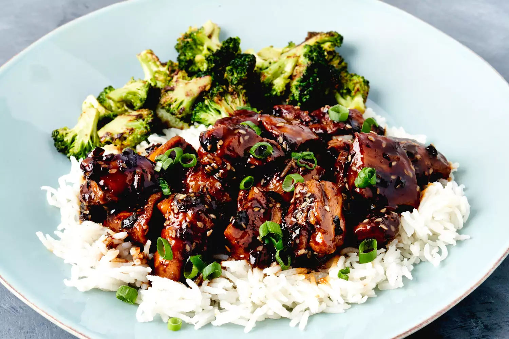

Chicken teriyaki

Description
This homemade teriyaki chicken recipe is quick and easy to make with chicken thighs. The flavors of ginger, garlic, and sesame in the sticky sauce will surely hit the spot! Serve over hot rice.
Ingredients
- 1 cup low-sodium soy sauce
- 1/4 cup sake
- 3 tablespoons rice vinegar
- 1/3 cup brown sugar, or more to taste
- 1 tablespoon white sesame seeds
- 1/4 teaspoon crushed red pepper
- 2 teaspoons canola or peanut oil
- 1 teaspoon toasted sesame oil
- 1 teaspoon kosher salt
- 1/2 teaspoon freshly ground black pepper
- 2 pounds boneless skinless chicken thighs, cut into 1 ½ inch pieces
- 2 teaspoons grated fresh ginger
- 1 teaspoon finely minced garlic
- 1 bunch green onions, thinly sliced, divided
- 1 ½ cups cooked rice